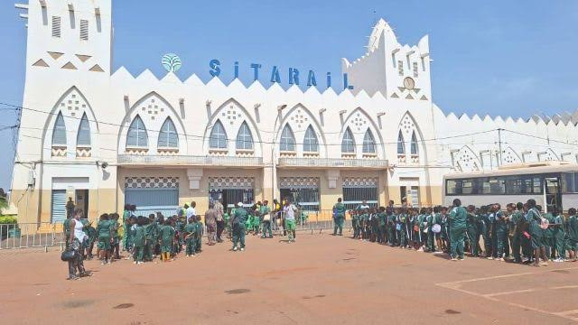

La Gare Ferroviaire de Bobo-Dioulasso

Historique
Inaugurée en 1934, la gare ferroviaire fut un maillon essentiel de la ligne Abidjan–Ouagadougou. Elle symbolise l’ouverture de Bobo-Dioulasso vers le commerce international et a favorisé l’essor économique de la région.
Architecture
Son style néo-soudanais, inspiré des traditions locales, se distingue par des façades imposantes et des arcs élégants. Elle reste aujourd’hui un repère emblématique du patrimoine urbain.